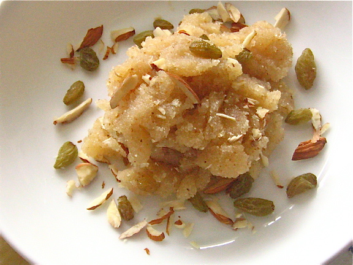

Return to Recipe page
Pakistani Halwa

A sweet dish which is very common amongst Pakistanis
halwa is considered the one of the easiest of all Indian & Pakistani desserts. But when I first started cooking, I had no idea how to transform the packet of coarse, ivory-colored flour into the miraculous, tender mass of beads that is Halwa.
Ingredients:
- Semolina
- Butter or Ghee (traditional, better choice)
- Water
- Cardamom pods
- Rose Water
- Saffron
- For garnish: almonds, raisins, pistachios or chopped nuts
Steps:
- Melt butter/ghee and roast tthe semloina. Wait for a nutty aroma and visible change in colour.
- Combine the sugar, water and cardamom in a pan. Dissolve the sugar and add saffron & rose water.
- Add this to the roasted semolina.
- Stir till thhe butter/ghee seperate from the halwa on the edges.
- Garnish and Enjoy while hot! :)